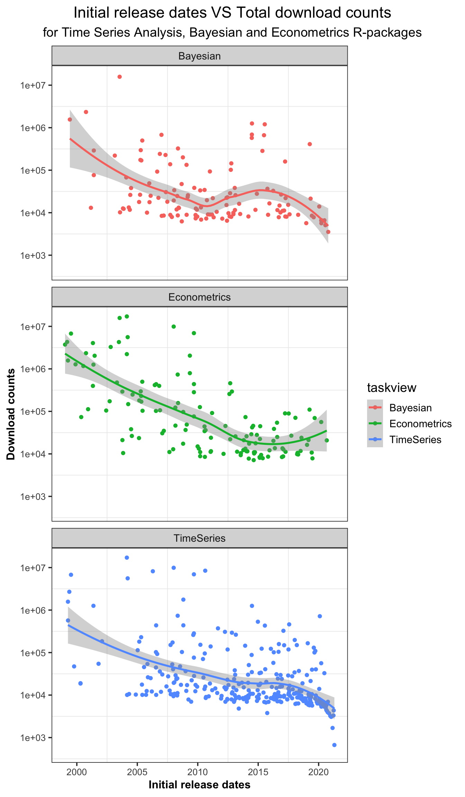

2.3 Compare last year’s downloads with the earliest release date
Finding x: Packages that were initially released earlier on CRAN have a higher download in the past year. This perhaps is because …

[ET: removed plots to replace with above. Comments left as is.]
In our common cognition, we think that the earlier a package is released, the more people will know about it, and thus the more downloads it will have. However, packages related to different topics cannot be directly compared, because it is possible that the total download amount of packages in a certain topic is higher than that in another topic. Therefore, in order to test this conjecture as clearly as possible, I selected three domain packages through CRAN task view, calculated their respective downloads in the previous half a year, and found their earliest release dates for comparison.
- Packages for Time Series Analysis
The first topic is Time Series Analysis. Time Series Analysis is a statistical technique that deals with time series data, or trend analysis. Time series data means that data is in a series of particular time periods or intervals(“Time Series Analysis” 2020).
Table ?? shows the first 15 timeseries packages along with their earliest release date and last half year’s total counts. It can be seen that lubridate ranks first on download count with release date XX. Except that, other first four packages are all released before 2010, which is over 10 years ago.
Figure ?? displays the scatterplot of the last half year’s download count and the earliest release date of timeseries packages. It can be seen that generally, as the earliest release date gets later and later, the number of download logs becomes lower and lower. And most of the high downloaded packages are from a period of time between 2004 and 2011. For timeseries packages, they are mainly released between 2012 and 2019.
- Bayesian packages for general model fitting
The second topic is Bayesian Inference. Bayesian statistics is a mathematical procedure that applies probabilities to statistical problems. It provides people the tools to update their beliefs in the evidence of new data(perpetual 2019).
Table ?? shows the first 15 econometric packages along with their earliest release date and last half year’s total counts. It can be seen that the first-rank package is XX released on XX. All the top 3 packages are released before 2005, and all the top 10 packages comes before 2010.
It can be seen from Figure ?? that similarly, the earlier packages is released, the more downloads it will have. And most of the packages are from 2007 to 2012.
- Econometrics
In order to test whether this is the case in other areas, let’s turn our attention to econometrics packages. Econometrics is the use of statistical methods using quantitative data to develop theories or test existing hypotheses in economics or finance, which relies on techniques such as regression models and null hypothesis testing(Hayes 2020).
Table ?? shows the first 15 econometric packages along with their earliest release date and last half year’s total counts. It can be seen that the first-rank package is zoo released on XX. All the top 3 packages are released before 2005, and all the top 10 packages comes before 2010.
In Figure ??, as we can see, for this kind of package, the download volume decreases more obviously with the release date, which is quite consistent with both timeseries and bayesian situations. And most of the packages are centered between 2013 and 2016.
In conclusion, I’m not surprised to find that the earlier the package is released, the more downloads it will has, which is reflected in bayesian, econometrics, time series cases. That is because,t he packages released earlier will be better known. When they are released early, there may be a relatively small number of packages of the same type, so the competition is relatively small. In contrast, the packages released later can easily be covered up, because people tend to use the well-known, mature and habitual packages.